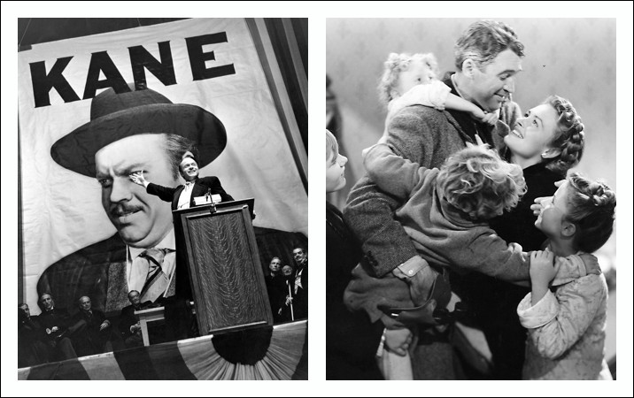

The Practical Utopian
The Practical Utopian
Citizen Kane vs. Citizen Bailey
By Herb Bowie
tags: art, cultural evolution, integral

I've often considered Citizen Kane and It's A Wonderful Life to be complementary works, much like cinematic twins separated at birth.
Consider first their similarities. Kane was released in 1941, while Wonderful Life was released in '46. Both were highly collaborative productions, and both were ultimately considered the signature works of their respective directors, Orson Welles and Frank Capra. Both films were box office failures when initially released, but found appreciative audiences later in their long careers. And both are often considered among the finest movies ever made.
More significantly, each film took on the challenge of summarizing a character's entire life during the course of roughly two hours. Both told their stories via flashbacks, and both used the dramatic device of having one or more narrators explaining elements of the character's life to an inquisitive outsider: a reporter, in Kane, and an angel in Life. And both began their stories with children playing in the snow.
There the similarities end, though, and in many other respects the films seem like mirror images of one another. Kane is a tragedy, ending with the main character's isolation and death. Wonderful Life is a comedy (although at times a dark one) ending with our hero's redemption and growth.
Further differences are revealed when we view both films through the lens of developmental levels, as originally defined by Clare Graves, Donald Beck and Christopher Cowan (through their Spiral Dynamics work), and then later adapted by Ken Wilber (through his Integral work).
In brief, these theories posit that both individual humans as well as human cultures evolve upwards through a series of levels, alternating between a focus on the individual and a focus on community. Higher levels don't supersede lower levels, but simply expand our range of human possibilities for dealing with the problems of increasingly large, complex and interdependent societies.
The following table offers a brief, spiraling summary of the first six developmental levels (often collectively referred to as “first-tier”).
| Individualistic | Community-Focused |
|---|---|
| Green | |
| 6. Postmodern / Pluralistic / Community | |
| Egalitarian; relativistic; situational; inclusive; respectful of diversity | |
| Orange | |
| 5. Modern / Rational / Prosperity | |
| Science; engineering; quantitative analysis; capitalism | |
| Blue | |
| 4. Traditional / Mythic / Order | |
| Groups aligned around shared sets of principles | |
| Red | |
| 3. Tribal / Power Gods / Significance | |
| Egocentric; self-assertion; power hierarchies; might makes right | |
| Purple | |
| 2. Magical / Animistic / Safety | |
| Seeking safety through custom and tradition | |
| Beige | |
| 1. Archaic / Instinctual / Survival | |
| Use of instincts to stay alive |
With the aid of this sort of reference we can see that Kane's main character is driven primarily by the individualistic levels shown above on the left, especially the red level 3 values of self-assertion and accumulation of wealth and power.
It's A Wonderful Life, on the other hand, shows a character repeatedly torn between the individualistic levels and the more community-focused ones. George Bailey is confronted with a series of choices over the course of the film, each one offering him a fresh opportunity to turn from community values to assertion of his individuality. He wants to leave Bedford Falls, go to college, learn engineering, see the world, build grand things, go to war, and be a part of large and ambitious enterprises. Instead he stays in his home town, runs the local building and loan, helps those of low estate buy their first homes, marries a girl from the same small town, lives in an old ramshackle home and serves as the town's air raid warden during the war. Each time George is offered a chance to embark on a journey to make his mark on the wider world outside Bedford Falls, community values tug on him and he decides to stay.
The conclusion of the film attempts to integrate the community-focused values with the individualistic ones, demonstrating that George has achieved Survival, Significance and Prosperity even while staying within his small local community. George's brother toasts him as “the richest man in town,” and the inscription in Clarence the Angel's gift tells him “Remember, no one is a failure who has friends.”
And so both films, through different character types and different narrative arcs, show us the play of these various cultural forces in American society. And both conclude, roughly speaking, by showing us the emptiness of pursuing purely individualistic goals without some concomitant focus on the value of community.
In many respects, the character of Charles Foster Kane was based on the life of William Randolph Hearst. However, Orson Welles clarified that the character was drawn from a number of sources, as well as incorporating original inventions. I would suggest that the character is really best understood as an enduring American archetype exemplifying the individualistic side of the developmental spiral depicted above.
I don't have to look far to find real-life examples of the archetypes and cultural forces featured in these two classic films. As I reflect on my personal history, it's clear that my own parents demonstrated the tension between these two sides of the spiral.
My mom was very much a Donna Reed sort of character out of It's A Wonderful Life, focused on values of family and community and tradition.
My father, as wonderful as he was, was an example of how George Bailey might have turned out if, at every turn, he had taken the more individualist fork in the road. Dad got out of farm country in Iowa as fast as his Ford and his Engineering degree would take him. He moved frequently up and down the East and West Coasts, changed jobs often, and owned a series of power boats all given various generations of the Travel On name. He divorced my mother when I was nine years of age, and moved on to a wife who was in many ways similar to Kane's mistress and second wife, Susan Alexander.
Of course none of us need to look much beyond the daily headlines to see examples of how this tension between individualistic expression and community support are showing up in our society today. Billionaries assert their individuality and power, forsaking any attachment to community, while rural towns all over the country come more and more to resemble George Bailey's nightmarish vision of Pottersville.
-
Vanity Fair: “HOWARD SCHULTZ: ‘I FIRMLY BELIEVE’ AMERICANS WANT A PRESIDENT JUST LIKE ME”
-
The New Yorker: “THE STORY BEHIND THE INSTANT CLASSIC ‘BEZOS EXPOSES PECKER’ HEADLINE”
-
The Seattle Times: “HOWARD SCHULTZ'S APOLOGY OVER SONICS MOVE IS TOO SELF-SERVING TO EARN SEATTLE'S FORGIVENESS”
-
The Seattle Times: “HOWARD SCHULTZ IS ABOVE THE POLITICAL FRAY – SO HIGH ABOVE HE OFTEN DOESN'T VOTE”
-
The Wall Street Journal: “RURAL AMERICA IS THE NEW ‘INNER CITY’”
All of us are faced with difficult decisions over the courses of our lives, but none of us should have to choose individualism over community, and none of us should worship at the feet of these sorts of individualists. We can't always have it all – we do have to make tough choices, just as Citizens Kane and Bailey did – but we can still strive to integrate individualistic concerns with concerns for community, in order to become whole, integral human beings.
And works of art such as Citizen Kane and It's A Wonderful Life, when viewed with thoughtful appreciation, can help show us the way.
Published 2019 Mar 11
 Content at Practopian.org is Copyright © 2009 - 2020 by Herb Bowie except where otherwise noted
Content at Practopian.org is Copyright © 2009 - 2020 by Herb Bowie except where otherwise noted